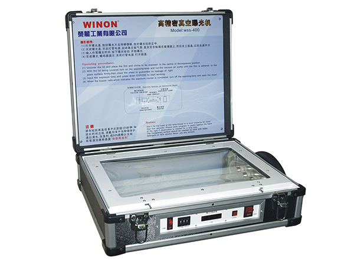
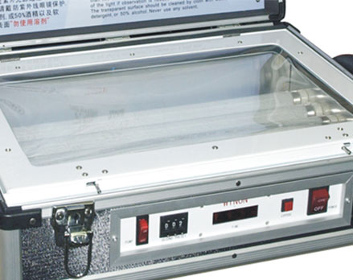
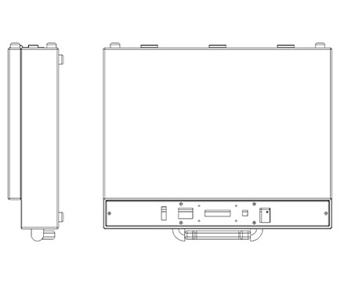

EXPOSURE MACHINE
WSS-400
Compact Exposure Machine with Vacuum Suction
Winon Industrial Co., Ltd. — Dongguan, China
The Winon WSS-400 is a compact single-sided exposure machine developed for screen printing plate making. It uses vacuum suction to hold the screen and film in tight, even contact, and an exposure timer for precisely controlled light exposure time.
Technical Parameters
| Machine Type | WSS-400 exposure machine |
|---|---|
| Maximum Workpiece Size | 200 x 350 mm |
| Power Specifications | 220V 50/60 Hz |
| Dimensions | 550 x 420 x 180 mm |
| Net Weight | 12 kg |
Application Areas
Screen printing plate making: exposing screens coated with photosensitive emulsion.
KEY FEATURES
Technical Features
Vacuum Suction
Tight, even contact between the screen and film for sharp, high-resolution stencils.
Controlled Exposure Time
Integrated exposure timer delivers repeatable, precisely timed exposure for consistent screen making.
Compact & Easy to Carry
Small footprint and lightweight design make the WSS-400 easy to place and move within small workshop spaces.
Product Gallery
Additional views of the WSS-400 showing product details and finish.


Interested in the WSS-400?
Contact Printway Marketing & Services for pricing, product demonstrations, spare parts, consumables, and technical support.
Request a Quote